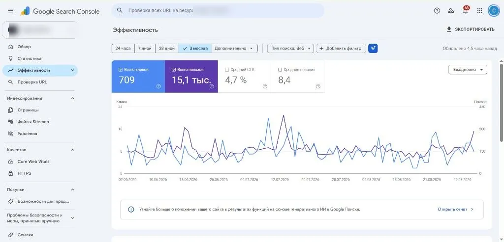
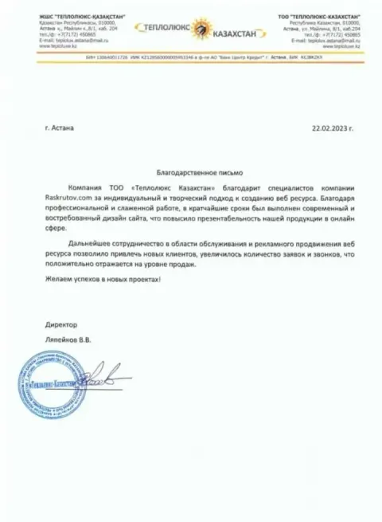
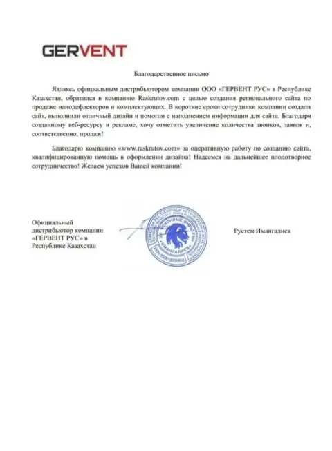

Видимость
Сайт чаще появляется по приоритетным запросам в органической выдаче Google.
 Органическое SEO в Google
Органическое SEO в Google
Рост видимости, трафика и заявок из поиска
Усиливаем органическую видимость в Google по коммерческим и информационным запросам: техническое SEO, контент, структура сайта, доверие и готовность к AI-поиску.

Органическое продвижение усиливает присутствие бизнеса в поиске и помогает получать обращения по целевым запросам. Работаем на измеримые показатели видимости и спроса.
Сайт чаще появляется по приоритетным запросам в органической выдаче Google.
Рост визитов от людей, которые уже ищут ваши услуги и товары.
Страницы и коммерческие блоки ведут посетителя к звонку, форме или WhatsApp.
Услуги, категории и посадочные закрывают спрос и дают понятный путь к заявке.
Клиенты находят вас по услугам и задачам, а не только по названию компании.
Усиливается узнаваемость и доверие к сайту в выдаче и на самом ресурсе.
Результат SEO складывается со временем: сильные страницы продолжают работать после доработок.
Google смотрит, насколько страница полезна для конкретного запроса. Важно совпадение интента, качество ответа, понятная структура, корректная индексация, техника, мобильная версия, скорость, внутренние ссылки, авторитет, экспертиза, подтверждённые факты и актуальность контента.
Как Google обрабатывает сайт
Сканирование
Индексация
Релевантность
Доверие
Позиции
Органический трафик
Страница отвечает на задачу пользователя: сравнить, купить, понять условия, выбрать подрядчика.
Поисковик должен быстро находить важные URL, понимать иерархию и индексировать нужные страницы.
Скорость, адаптив, стабильный HTML и Core Web Vitals влияют на удобство и оценку сайта.
Внутренние ссылки помогают усиливать приоритетные разделы. Внешние сигналы и упоминания поддерживают доверие.
Кейсы, отзывы, факты, сроки и понятные условия помогают Google и пользователю доверять странице.
Свежие данные, актуальные цены и обновлённые разделы поддерживают релевантность по живым запросам.
Техническая база нужна, чтобы Google стабильно находил, понимал и индексировал важные страницы. На крупных сайтах дополнительно учитываем нагрузку на обход и приоритет URL.
Собираем спрос, кластеризуем запросы и строим SEO-карту: какие страницы нужны под коммерческий, региональный и информационный спрос. Распределяем интенты так, чтобы страницы не конкурировали друг с другом.
Карта показывает, какую страницу усиливать первой, где нужен новый URL и как связать разделы для роста целевых запросов в Google.
Семантика и SEO-карта
Поисковый спрос
Кластеры
Страницы
Внутренние связи
Поисковая видимость
Контент должен быть полезным и совпадать с запросом. На коммерческих страницах даём конкретику: услуги, условия, сроки, цены где они подтверждены, кейсы, реальные отзывы и FAQ. Экспертиза и медиа добавляются там, где помогают понять предложение.
Заголовок, структура и текст отвечают на задачу поиска без воды и шаблонных блоков.
Цены, сроки, форматы работ, кейсы и ответы на возражения помогают принять решение.
Реальные отзывы, факты, понятные формулировки и при необходимости медиа усиливают страницу.
По Search Console и аналитике смотрим показы, клики, позиции, запросы, страницы, CTR, динамику и статус индексации. На этих данных корректируем приоритеты: какие URL усиливать, где править сниппеты, где закрывать технические ограничения. Клиентские кабинеты и приватные цифры сторонних проектов не публикуем.

Готовим сайт к AI-поиску: экспертные ответы, ясная структура, проверяемые факты, авторитет, кейсы, структурированные данные, сущности и цитируемость. Это повышает шанс корректного понимания компании алгоритмами. Попадание в AI Overviews не гарантируем.
Задача: усилить органический канал и закрыть коммерческие запросы по доставке. Ниже — подтверждённые метрики из кейса.
Форматы подобраны под разный этап сайта: от разового фундамента до системной ежемесячной работы. Старт — бесплатный экспресс-разбор.
390 000–490 000 ₸
Разовая основа
Для сайтов, которым нужна база: аудит, семантика, карта приоритетов и критичные технические правки.
от 120 000 ₸ / месяц
Лёгкое сопровождение
Подходит, когда фундамент уже есть и нужна регулярная поддержка видимости и страниц.
от 250 000 ₸ / месяц
Основной рабочий формат
Для роста по коммерческим кластерам: техника, контент, страницы, GSC и приоритеты каждый месяц.
490 000–590 000 ₸ / месяц
Расширенный объём
Для конкурентных ниш и большего объёма страниц, контента и параллельных направлений работ.
190 000–390 000 ₸
AEO-блок
Отдельный пакет под структуру ответов, факты, сущности и цитируемость в AI-поиске.
Бесплатно
Экспресс-разбор
Короткий разбор сайта и спроса в Google: где точки роста и какой формат работ уместен.
Смотрим сайт, спрос и ограничения, фиксируем первые приоритеты.
Техника, индексация, структура, контент и коммерческие факторы.
Собираем и кластеризуем запросы под услуги и интенты.
Определяем, какие страницы создавать и усиливать в первую очередь.
Закрываем критичные технические препятствия для индексации и скорости.
Усиливаем тексты, блоки доверия, FAQ и путь к заявке.
Контролируем попадание приоритетных URL в индекс Google.
Разбираем запросы, страницы, CTR и динамику видимости.
Дорабатываем URL, которые уже показывают рост по данным.
Системные итерации, отчётность и обновление приоритетов.
SEO работает накопительно. После технических правок и усиления ключевых страниц изменения видимости могут появиться раньше, но устойчивый результат требует системной работы.
Срок зависит от состояния сайта, конкуренции в нише и объёма доработок. Обещаний «ТОП за 1 месяц» не даём.
Ниже — опубликованные благодарственные письма клиентов. Оценки Google и 2GIS собраны на странице отзывов компании.

Опубликованное благодарственное письмо. Текст отзыва здесь не пересказываем — документ доступен на странице отзывов.
Смотреть отзывы и письма
Опубликованное благодарственное письмо. Полный набор документов и оценок — на странице отзывов Raskrutov.
Смотреть отзывы и письмаНужно SEO-продвижение сайта в Google? Напишите или оставьте заявку — сделаем экспресс-разбор и предложим формат работ.
Отправьте заявку
Расскажите о вашем проекте - мы предложим лучшее решение.
Наш офис: Казахстан, Петропавловск, ул. М. Жумабаева, 109, 6 этаж, офис 606а.
Покажем точки роста видимости, структуры и коммерческих страниц — без обязательств по старту работ.
Получите экспресс-разбор SEO в Google
Оставьте контакты — разберём сайт, спрос и точки роста органической видимости